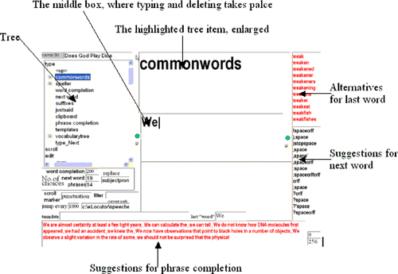

30. When a Button Is All That Connects You to the World
Professor stephen hawking can only press one button," was the one-line spec we were given.
Professor Hawking, the eminent theoretical physicist, has ALS. This disease is "marked by gradual degeneration of the nerve cells in the central nervous system that control voluntary muscle movement. The disorder causes muscle weakness and atrophy throughout the body."[*] He writes and speaks using the software Equalizer, which he operates via a single button. It uses an external box for text-to-speech, which is no longer manufactured. The source code for Equalizer has also been lost.
[*] http://en.wikipedia.org/wiki/Amyotrophic_lateral_sclerosis.
In order to continue to be able to function should his outdated hardware fail, he approached some software companies, requesting that they write software that might allow persons with extreme motor disabilities to access computers. Radiophony, the company that Vickram Crishna and I started, was happy to take up this challenge. We named the software eLocutor[ ] and decided to make it free and open source, so that the problem with Equalizer should never reoccur.
] and decided to make it free and open source, so that the problem with Equalizer should never reoccur.
[
The importance of such software in the life of a disabled person can hardly be overstated. Indeed, Professor Hawking himself is the best example of this. He has been able to become not only one of our leading scientists, but also an immensely successful author and motivator, only because software allows him to write and to speak. Who knows how much genius we have left undiscovered, simply because a child could not speak or write clearly enough for the teacher to understand.
Professor Hawking still continues to use the software Equalizer, which he has been familiar with for decades. Meanwhile, however, eLocutor is proving to be useful for persons with a variety of disabilities, particularly since it is easily customizable to the changing needs of the individual.
Our first question, and that of every engineer we explained this problem to, was: could we not find a way to increase the number of inputs Professor Hawking could provide? But his assistant was steadfast: Equalizer worked with a single button, and they saw no reason to change. We too saw the wisdom in writing software for the most extreme case of physical disability, for there were many kinds of binary switch that even a severely disabled person could press, operated by a shoulder, eyebrow, or tongue, or even directly by the brain.[ ] Having devised a solution that the largest possible number of people could use, we might then see how to speed up input for those with greater dexterity.
] Having devised a solution that the largest possible number of people could use, we might then see how to speed up input for those with greater dexterity.
[
We also saw a niche market for an adaptation of eLocutor for a wider community. Software that could be operated using a single button might come in quite handy for mobile phones, for instance: the hands-free attachment typically has only one button. With appropriate text-to-speech conversion to eliminate dependence on the screen, it could also be operated by the driver of a car. Or, for another scenario, imagine sitting in a meeting with a client, and, without taking your eyes off her, you might be able to Google a name she dropped and have the search result unobtrusively spoken into your ear.
Of course, for a software writer, devising an editor that functioned efficiently using only a single button was quite an interesting technical challenge. First, we had to pick a basic set of functions for eLocutor to perform. We selected file retrieval and storage, typing, deleting, speaking, scrolling, and searching.
Next, we had to find ways to perform all these activities using only a single button. This was the most exciting part, for it is not often that a programmer gets to work at the level of designing basic communication paradigms. This is also the activity that takes up most of this chapter.
30.1. Basic Design Model
Needless to say, the software needed to be efficient, so that the user can type quickly without having to click too often. It sometimes takes Professor Hawking minutes to type a single word, so every improvement in editing speed would be useful for a busy man.
The software certainly needed to be highly customizable. The nature and size of the vocabulary of our users might vary vastly. The software would need to be able to adapt to these. Further, we were keen to ensure that the disabled person could change as many settings and configurations as possible herself, without the intervention of a helper.
Since we had so little by way of job specification to go on, and no experience in writing such software, we expected to make fairly serious changes in the design as our understanding grew. Keeping all these requirements in mind, we decided to write the software in Visual Basic version 6, an excellent rapid prototyping tool with a large variety of ready-made controls. VB made it easy to build a graphical user interface and provided convenient access to database features.
Unique to this problem was the unusually high asymmetry in data flow. A user who could see reasonably well would have a large capacity for taking in information. From persons with extreme motor disability, however, very little data flowed in the other direction: just the occasional bit.
The software offers choices one by one to the user, who accepts a choice by clicking when the desired one is presented. The problem is, of course, that there are so many choices at any point. She may wish to type any one of dozens of characters, or save, scroll, find, or delete text. It would take too long if eLocutor were to cycle through all choices, so it organizes them in groups and subgroups, structured as a tree.
To speed up typing, eLocutor looks ahead, offering ways to complete the word being typed, and choices for the next word and the rest of the phrase. The user needs to be kept aware of these guesses, so that he can spot opportunities for a shortcut, should one become available.
We therefore decided to create a visual interface in which the elements are dynamically resized or even hidden, depending on what we thought the user might wish to see, in order to present shortcuts that would help her key in the desired sentence speedily. So, when the user is typing, the eLocutor screen contains a window with suggestions for how she might complete the current word, and another window that helps her select the following word. (Groups of punctuation characters are treated as words, too.) If the start of the sentence she is typing is identical to any sentences in the database, they are displayed, too. Figure 30-1 shows a typical eLocutor display.
Sometimes the choices are far too many to fit into a small window. A scan feature helps the user quickly select among them. This opens up a large window, showing all the choices, with smaller groups out of these successively appearing in a smaller window. A word appearing in the large window informs the user that eLocutor is able to offer him a shortcut to typing that word. He now waits for it to appear in the smaller window, when he clicks. The large window disappears, and the choices from the smaller window, about a dozen, now become available to the user through the tree, as usual.
Figure 30-1. The eLocutor screen
Screen real estate is again rezoned when the user stops typing and starts to scroll the text, at which time the screen displays as much text as it can before and after the insertion point.
We needed to be as smart in prediction as we could manage, so as to make best possible use of the clicks a disabled user laboriously produces. The intelligence we built in is of three kinds:
A relational database
-
When the user enters the first few characters of a word, a search in the dictionary table provides suggestions for how to complete it. An analysis of previous text produced by the user also indicates what word the user might select next.
A cache
-
This takes advantage of patterns in user behavior. We cache not only frequently used words, but also filenames, search terms, spoken text, and paths in decision-making, so that the user can easily reproduce a sequence of steps.
Special groupings
-
This kind of intelligence takes advantage of natural grouping of words, such as city names, food items, parts of speech, etc. These groupings allow the user to construct new sentences out of old ones, by quickly replacing words in commonly used phrases with others that are similar. For instance, if the sentence "Please bring me some salt" is in the database, a few clicks allow the construction of "Please take her some sugar."
Uniting all the available options is the tree, similar to a menu hierarchy. In the tree, the choices are highlighted one after another, revolving at a fixed rate. The tree structure also extends naturally to subsets of options, such as the special groupings of words just described.
The various elements of the screen in Figure 30-1 need some explanation. The active portion of text that the user wishes to edit is shown in the middle box, while the contents of the boxes above and below it adapt to what the user is doing. To the right, and below, are predictions the software makes about what you might wish to type next.
The text in the upper-righthand corner (shown in red on the user's screen) consists of suggestions for replacing the last word, which are useful if you have typed a few characters of a word and would like eLocutor to guess the rest. Below that, in black, are suggestions for the next word if you have finished typing the last one. Groups of punctuation characters are treated as words, too, and since the last word consists of alphanumeric characters, the next one will be punctuation characters, as shown on the right side of Figure 30-1.
When the user is typing sentences similar to ones already typed, the suggestions at the bottom come in handy. The attention of the user, however, is mostly on the tree to the left, which is the only way she can take advantage of all the information on offer to influence the text in the middle box.
Below the tree, the user can see how many choices of various kinds are available to her, as well as other useful information discussed later.
The interface moves through the tree sequentially. With the one button at her disposal, the user clicks at the right time when the item she wishes to select is highlighted. The different windows in the screen show the user the options available for the next word, word completion, phrase completion, etc. To take advantage of these options, she must navigate until the corresponding choice is offered to her in the menu tree.